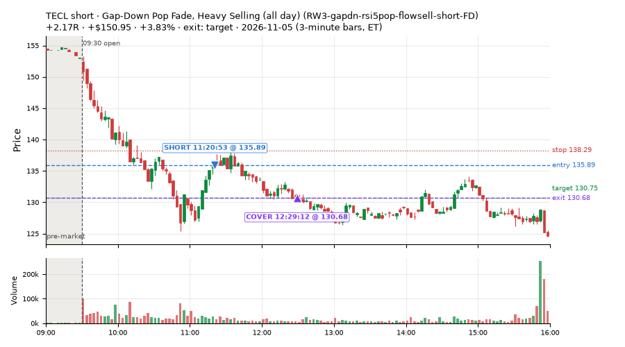
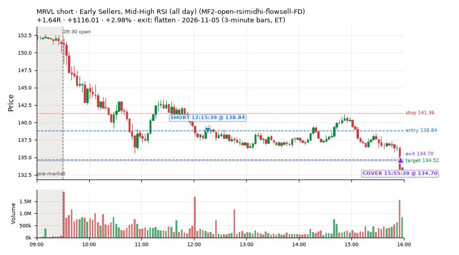
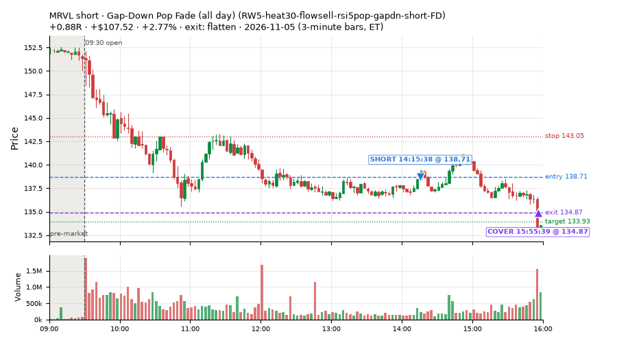
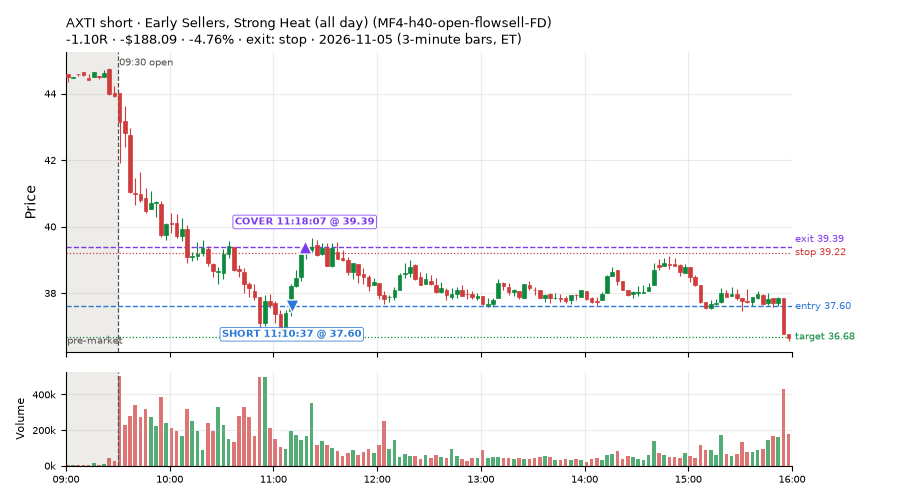
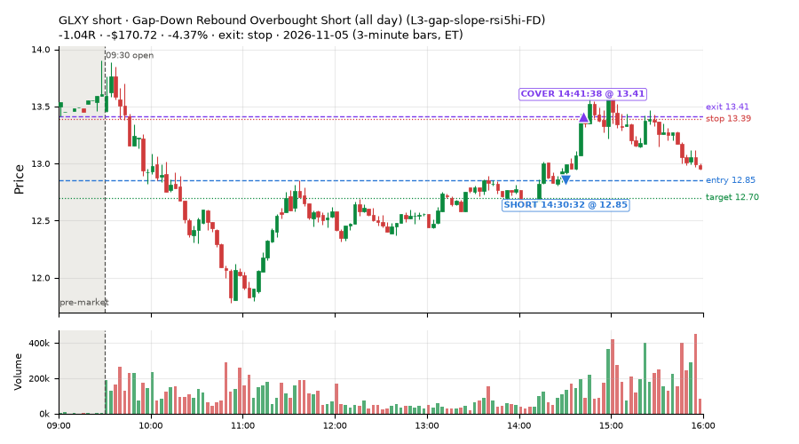
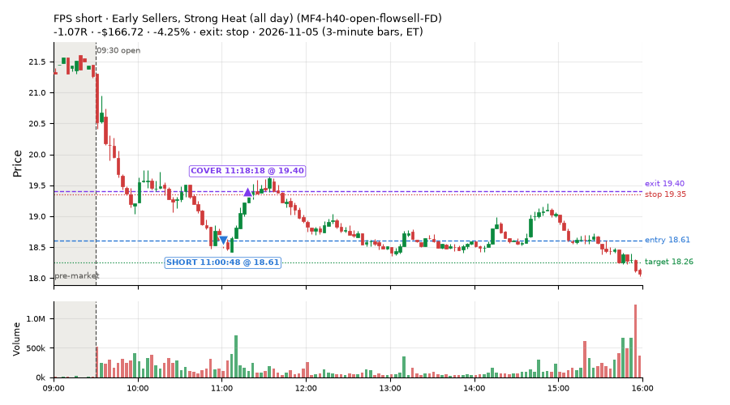
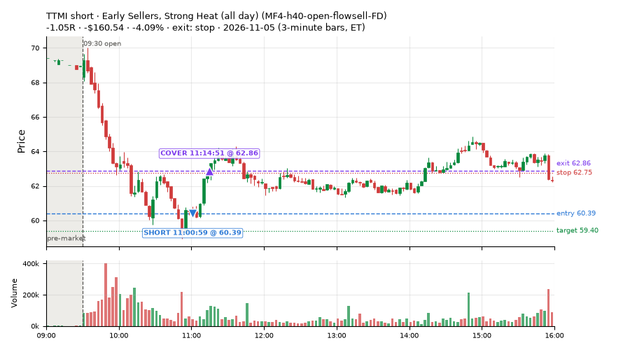
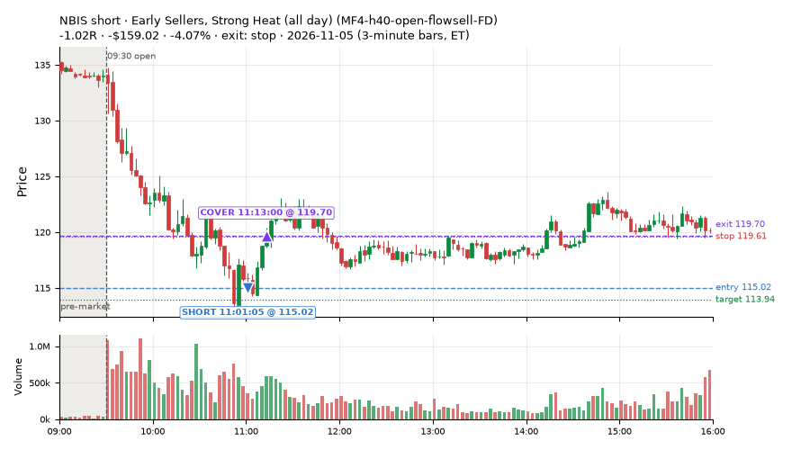

61 trades · win rate 49% · P/L $-363.32
PROBATION: no live setup has passed both locked test periods. 10 owner-directed setups added 2026-10-08 (MarcoFlow top 5 + 5 new), untested live. RW6G1 (RW6 + VWAP band guard) added 2026-10-09, probation.

| Symbol | Setup | Side | In | Out | Entry | Exit | Exit reason | % gained | P/L |
|---|---|---|---|---|---|---|---|---|---|
| TECL | Gap-Down Pop Fade, Heavy Selling (all day) (RW3-gapdn-rsi5pop-flowsell-short-FD) | short | 11:20 | 12:29 | 135.89 | 130.68 | target | +3.83% | $150.95 |
| MRVL | Early Sellers, Mid-High RSI (all day) (MF2-open-rsimidhi-flowsell-FD) | short | 12:15 | 15:55 | 138.84 | 134.70 | flatten | +2.98% | $116.01 |
| MRVL | Gap-Down Pop Fade (all day) (RW5-heat30-flowsell-rsi5pop-gapdn-short-FD) | short | 14:15 | 15:55 | 138.71 | 134.87 | flatten | +2.77% | $107.52 |
| Symbol | Setup | Side | In | Out | Entry | Exit | Exit reason | % lost | P/L |
|---|---|---|---|---|---|---|---|---|---|
| AXTI | MF4-h40-open-flowsell-FD | short | 11:10 | 11:18 | 37.60 | 39.39 | stop | -4.76% | $-188.09 |
| GLXY | L3-gap-slope-rsi5hi-FD | short | 14:30 | 14:41 | 12.85 | 13.41 | stop | -4.37% | $-170.72 |
| FPS | MF4-h40-open-flowsell-FD | short | 11:00 | 11:18 | 18.61 | 19.40 | stop | -4.25% | $-166.72 |
| TTMI | MF4-h40-open-flowsell-FD | short | 11:00 | 11:14 | 60.39 | 62.86 | stop | -4.09% | $-160.54 |
| NBIS | MF4-h40-open-flowsell-FD | short | 11:01 | 11:13 | 115.02 | 119.70 | stop | -4.07% | $-159.02 |








Signal to fill: median 2s, 90th percentile 5s (61 trades). Bars close each minute; the order follows the bar close.
Best excursion (MFE): median 1.01R; worst (MAE) median 0.97R. 30% of trades never got +0.25R in our favour; 6 reached +1R and still closed at or below 0.
| Symbol | Setup | Best R | Worst R | Closed R |
|---|---|---|---|---|
| CLSK | MF2-open-rsimidhi-flowsell-FD | +4.75 | -1.28 | -1.28 |
| IBIT | MF2-open-rsimidhi-flowsell-FD | +2.30 | -1.18 | -0.93 |
| FBTC | MF2-open-rsimidhi-flowsell-FD | +1.60 | -1.09 | -1.07 |
| IBIT | MF2-open-rsimidhi-flowsell-FD | +1.59 | -1.01 | -0.84 |
| JEPQ | RW3-gapdn-rsi5pop-flowsell-short-FD | +1.42 | -1.17 | -0.96 |
| Entry time | Trades | Win | Avg R | P/L |
|---|---|---|---|---|
| 09:50-10:30 | 2 | 100% | +0.56 | $84.72 |
| 10:30-11:30 | 22 | 32% | -0.23 | $-1,029.96 |
| 11:30-13:00 | 31 | 58% | +0.35 | $706.36 |
| 14:00-16:00 | 6 | 50% | -0.11 | $-124.44 |
| Setup | Trades | Win | Avg R | Adj R (net of SPY) | Avg R ex-market (all sessions) | P/L |
|---|---|---|---|---|---|---|
| Gap-Down Rebound Overbought Short (all day) (L3-gap-slope-rsi5hi-FD) | 5.0 | 40% | -0.47 | -0.39 | -0.51 (beta -0.86, n 14) | $-225.97 |
| Early Sellers, Mid-High RSI (all day) (MF2-open-rsimidhi-flowsell-FD) | 21.0 | 38% | -0.02 | -0.58 | -0.07 (beta -2.82, n 73) | $95.21 |
| Early Sellers, Strong Heat (all day) (MF4-h40-open-flowsell-FD) | 15.0 | 20% | -0.70 | -0.63 | -0.21 (beta -1.41, n 75) | $-1,275.72 |
| Big Loser Flush Buy (NS5-sma50-flush-oversold-long) owner-directed; holdouts once: Sep-Oct -0.008R n73, Apr-Jun +0.002R n231 | 2.0 | 0% | -1.02 | +0.06 | +0.22 (beta +0.83, n 27) | $-48.18 |
| Gap-Down Pop Fade, Heavy Selling (all day) (RW3-gapdn-rsi5pop-flowsell-short-FD) | 13.0 | 92% | +1.28 | +0.73 | +0.23 (beta -1.14, n 79) | $791.65 |
| Gap-Down Pop Fade (all day) (RW5-heat30-flowsell-rsi5pop-gapdn-short-FD) | 3.0 | 100% | +1.00 | +0.43 | +0.22 (beta -0.86, n 95) | $221.16 |
| RSI Collapse Dip Buy (all day) (ST7-rsi50dn-long-pm-t1s1-FD) | 2.0 | 100% | +1.05 | +1.95 | +0.19 (beta +0.09, n 21) | $78.53 |
Market direction (SPY, beta 1) accounted for $430.96 of today's $-363.32; the rest ($-794.28) came from the setups themselves. Avg R net of SPY: -0.14 (incl. a hedge leg's cost; report only).
10 setups live today. Today: 359 signals, 61 taken, 2 lost because another setup held the symbol (1%). Since 2026-10-06 (23 sessions): 2455 signals, 917 taken, 111 lost to other setups (4%). Peak open positions today 22 of 77 slots. Earnings blackout removed 1502 symbols before scanning.
Simulated playing time (not live): 1523 what-if trades of signals not taken, avg -0.10R, 52% winners; of them 111 lost to another setup (avg -0.06R).
Silent: intraday_momentum · Crowded out: MF4-h40-open-flowsell, MF3-open-flowsell-rsi5hi, MF5-flowsell-vwapup-rsi5hi · Starved: MF2-open-rsimidhi-flowsell
| Prio | Setup | Today sig / taken | Sessions | Signals / taken / trades | Taken/day | Expected/day | Lost to other setups | Lost to (setup n) | Top skip reasons | SIMULATED: not-taken n / avg R / win | Verdict |
|---|---|---|---|---|---|---|---|---|---|---|---|
| 1 | Gap-Down Pop Fade (all day) RW5-heat30-flowsell-rsi5pop-gapdn-short-FD | 6 / 3 | 15 | 124 / 95 / 95 | 6.33 | 12.79 | 0 | – | spread / quote / size 17, not shortable / shorts off 11, daily loss cap 1 | 29 / -0.12R / 45% | ok 31.7 entries/week |
| 2 | Gap-Down Pop Fade, Heavy Selling (all day) RW3-gapdn-rsi5pop-flowsell-short-FD | 24 / 13 | 15 | 135 / 79 / 79 | 5.27 | 13.59 | 1 | CWT14-failbrk-pdl-p10-lowvol-long 1 | not shortable / shorts off 22, spread / quote / size 20, daily loss cap 13 | 56 / +0.20R / 61% | ok 26.3 entries/week |
| 3 | Early Sellers, Mid-High RSI (all day) MF2-open-rsimidhi-flowsell-FD | 55 / 21 | 13 | 154 / 73 / 73 | 5.62 | 10.09 | 4 | RW5-heat30-flowsell-rsi5pop-gapdn-short-FD 4, RW3-gapdn-rsi5pop-flowsell-short-FD 4, MF2-open-rsimidhi-flowsell-FD 4 | spread / quote / size 33, not shortable / shorts off 24, daily loss cap 20 | 81 / -0.21R / 33% | ok 28.1 entries/week |
| 4 | Early Sellers, Strong Heat (all day) MF4-h40-open-flowsell-FD | 64 / 15 | 13 | 194 / 75 / 75 | 5.77 | 16.45 | 4 | RW5-heat30-flowsell-rsi5pop-gapdn-short-FD 4, RW3-gapdn-rsi5pop-flowsell-short-FD 4, MF2-open-rsimidhi-flowsell-FD 3 | not shortable / shorts off 48, daily loss cap 36, spread / quote / size 31 | 118 / -0.06R / 64% | ok 28.8 entries/week |
| 5 | RSI Collapse Dip Buy (all day) ST7-rsi50dn-long-pm-t1s1-FD | 6 / 2 | 9 | 35 / 21 / 21 | 2.33 | 2.17 | 0 | – | spread / quote / size 14 | 14 / +0.07R / 57% | slow 11.7 entries/week; ~5 weeks to 60 trades |
| 6 | Gap-Down Rebound Overbought Short (all day) L3-gap-slope-rsi5hi-FD | 126 / 5 | 5 | 287 / 14 / 14 | 2.80 | – | 2 | L3-gap-slope-fromopen-FD 2 | not shortable / shorts off 218, daily loss cap 34, spread / quote / size 19 | 263 / -0.00R / 70% | slow 14.0 entries/week; ~4 weeks to 60 trades |
| 7 | Gap-Down Recovery Fade (all day) L3-gap-slope-fromopen-FD | 69 / 0 | 7 | 661 / 34 / 34 | 4.86 | – | 14 | L3-gap-slope-fromopen-FD 14, L3-gap-slope-rsi5hi-FD 1 | not shortable / shorts off 566, daily loss cap 26, spread / quote / size 20 | 625 / -0.20R / 44% | ok 24.3 entries/week |
| 8 | Big Gainer Dip-and-Pop NS1-rsidip-rsi5pop-long | 0 / 0 | 21 | 18 / 14 / 14 | 0.67 | 0.92 | 0 | – | spread / quote / size 4 | 4 / +0.41R / 100% | slow 3.3 entries/week; ~18 weeks to 60 trades |
| 9 | Big Loser Flush Buy NS5-sma50-flush-oversold-long | 6 / 2 | 21 | 35 / 27 / 27 | 1.29 | 2.41 | 0 | – | daily loss cap 4, spread / quote / size 4 | 8 / -0.06R / 50% | slow 6.4 entries/week; ~9 weeks to 60 trades |
| 10 | Early Sellers, Strong Heat MF4-h40-open-flowsell | 3 / 0 | 21 | 95 / 21 / 21 | 1.00 | 7.24 | 37 | MF4-h40-open-flowsell-FD 32, MF3-open-flowsell-rsi5hi-FD 4, MF3-open-flowsell-rsi5hi 3 | symbol held by another setup 37, spread / quote / size 21, not shortable / shorts off 16 | 74 / -0.04R / 65% | crowded-out 37 of 95 signals (39%) lost to setups already holding the symbol |
Every trade is attached as a CSV you can open and edit in Excel or Google Sheets. Live page: https://misiti15.github.io/MCF/live/